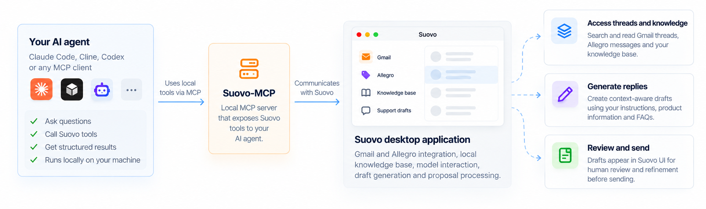

Find the right conversation
List, search, and inspect cached Gmail or Allegro support threads when you ask the client to do so.
Local support tools · Suovo-MCP
Suovo brings your customer conversations and reference material into one desktop app. Suovo-MCP lets a local AI client use that context to find information and prepare replies, while you stay in charge of the final response.
MCP is a standard way for an AI client to use another app’s tools. With Suovo-MCP, the client can search support context, use your knowledge base, and prepare reply proposals through Suovo instead of rebuilding that workflow in every prompt.
List, search, and inspect cached Gmail or Allegro support threads when you ask the client to do so.
Search indexed reference material and generate a citation-backed reply draft for a person to review.
Save or update a proposal in Suovo’s shared Reply Review Queue. You handle review and any later delivery in Suovo’s UI.
You can ask an agent to prepare a batch of reply proposals and then review them in Suovo. The agent calls Suovo directly for inbox context and knowledge retrieval, rather than spending tokens reconstructing that context or being told how to run the same retrieval steps again. The result is less repetitive prompting and more time for the cases that need your judgment.

Suovo-MCP runs locally with Suovo. The client automates use of Suovo’s tools; Suovo does the support-work heavy lifting. It does not give the client authority to send a reply.
Open Settings in Suovo and enable MCP. If you use Codex or Claude Code, Suovo finds the usual configuration file and offers to install or update the connection. Other compatible clients can use the manual details shown in Settings.
Use the one-click Codex or Claude Code setup, or configure another local client manually.
Inputs, effects, and return shapes for all Suovo-MCP tools.
Answers about local access, drafts, provider data, and common connection issues.